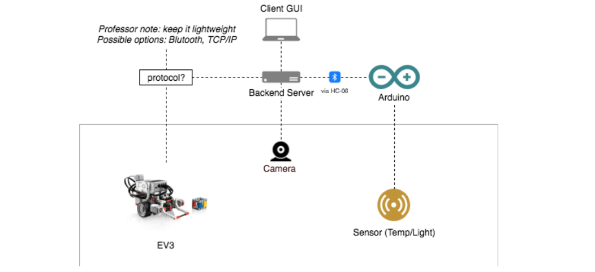

The purpose of the system is an automated warehouse transport and store prototype using robotics and sensors.
Robot requirements
The Robot should be able to pick up a payload and deliver it to a storage location that satisfies the payload’s requirements. Possible payload requirements are the following (supplied by Arduino and sensors): Temperature Light (IR & Visible)
UI requirements
A user should be able to monitor the warehouse, minimally through a terminal interface but preferable via a web GUI with live video and sensor data

The Arduino will handle continuous data gathering from light/temperature sensors and transmission of them via Bluetooth to the main server.
The EV3 Robot will handle the physical requirements of transporting the payload by acting on the navigation instructions sent by the server.
The server will keep track of a virtual representation of the warehouse to guide the Robot to its destination according to payload requirements and sensor data.
The frontend will handle the interaction between end user and the system, providing video feedback of the warehouse.Describe how subsystems are assigned to hardware and off-the-shelf components. Also list and explain issues introduced by multiple nodes and software re-use.
For each subsystem identified in section 3.2, give the (1) subsystem architecture: its design, either as a known pattern or a new design; (2) the subsystem interface or API; and (3) a brief description of the implementation plan for the subsystem